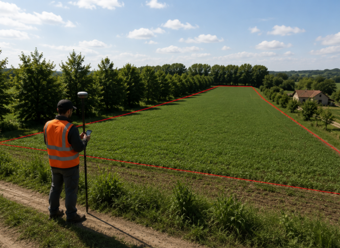

Preliminary Field Preparation
Before any UAV mission, the study area is accurately prepared to ensure reliable and repeatable data acquisition. The field boundary (Area of Interest, AOI) is first delineated using high-precision RTK/GNSS surveying, providing centimetre-level positioning for all subsequent analyses. At the same time, ground observations and reference measurements are collected to support the interpretation and validation of remote sensing products.

UAV Data Acquisition
Once the field has been prepared, the UAV mission is carried out following a predefined flight plan to guarantee complete and consistent coverage of the Area of Interest. During a single survey, complementary datasets are collected, combining high-resolution multispectral imagery with thermal observations to capture different aspects of crop condition.
Flight Planning

Automated flight missions ensure complete field coverage with consistent altitude, overlap and acquisition geometry.
Multispectral Imaging

Multispectral imagery provides the spectral information required to derive vegetation indices describing crop vigor and health.
Thermal Imaging

Thermal imagery measures canopy temperature, supporting the detection of water stress and plant physiological conditions.
Database Generation

After data acquisition, all collected imagery is organised into a structured geospatial database. RGB, multispectral and thermal datasets are stored together with acquisition metadata, georeferencing information and survey dates to ensure complete traceability of each mission.
This standardized database provides the foundation for the subsequent processing pipeline, enabling vegetation index computation, canopy temperature analysis and the generation of crop stress maps within the MyCrop WebGIS platform.